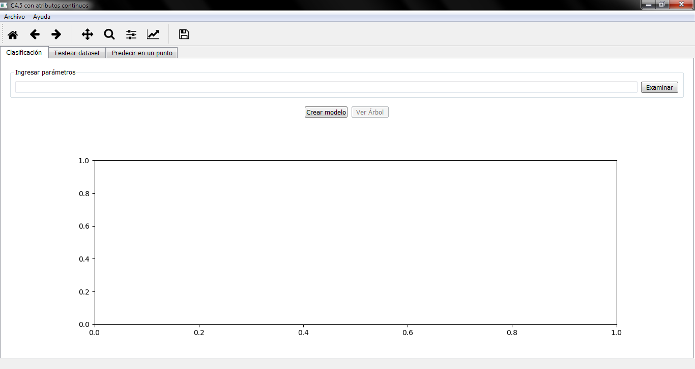
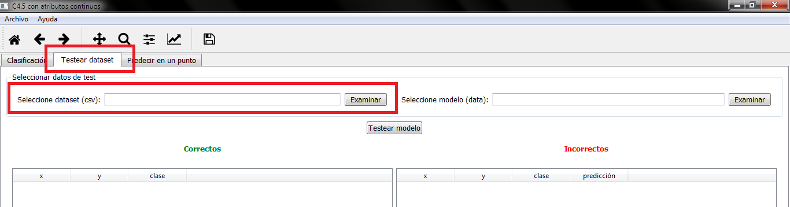
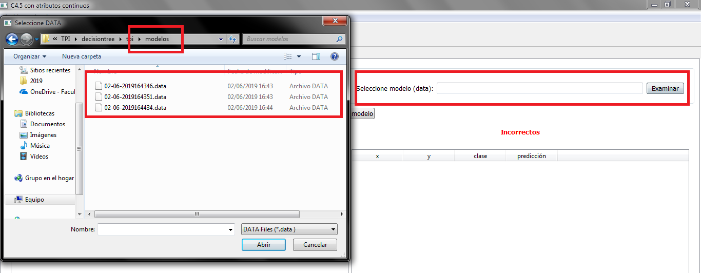
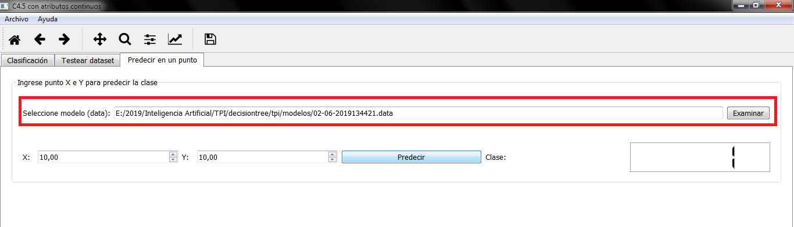
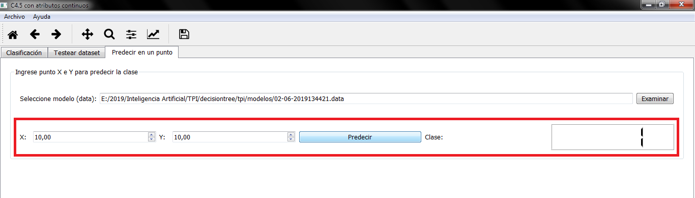

Instrucciones de Uso C4.5 - AC
- Inicio Rapido
- Bienvenido
- Dependencias
- Mínimos Requisitos
- Generar Modelo:
- Paso 1
- Paso 2
- Paso 3
- Testear Modelo:
- Paso 1
- Paso 2
- Paso 3
- Testear Punto:
- Paso 1
- Paso 2
- Resultados interesantes:
Inicio Rapido
Bienvenido
Acerca de C4.5 - AC
C4.5 - AC es una aplicación que permite crear árboles de decisión binarios a partir de una dataset de entrenamiento. Una vez generado el modelo, a través del ingreso de un dataset de test ó un punto, permite observar los resultados del testeo del modelo.
Está desarrollado por Alumnos del 5to Nivel de Ingeniería en Sistemas de Información de la Universidad Tecnológica Nacional, para la materia de Inteligencia Artificial.
Autores:
- GARCÍA AKIYAMA Jorge Horacio ()
- GRINBERG David ()
- HRUZA Gabriel Carlos ()
Docentes a cargo:
- Dr. Marcelo Karanik
- Ing. Jorge Roa
Dependencias
C4.5 - AC esta desarrollado con Tecnologias OpenSource. Se utilizo Python en su version 3.7. Ademas se utilizaron:
- PyQT5: para la generacion de la interfaz grafica de Usuario.
- Pyinstaller: para la generacion de ejecutables y gestión de dependencias.
- Matplotlib: para representar en los ejes cartesianos los puntos del dataset de entrenamiento.
- Pandas: para utilizar la estructura Dataframe.
- Graphviz: para la representación del árbol binario generado.
Mínimos Requisitos
C4.5 - AC requiere:
- Sistemas Operativo Windows 7 en adelante.
Tutorial
Paso 1: Generar modelo
- Pantalla Inicial
Antes de comenzar deberá contar con 2 archivos csv, uno para el entrenamiento y el otro, para el testeo posterior del modelo generado.
En la figura se muestra la pantalla de inicio de c4.5 - AC.
Para comenzar a utilizar la aplicación deberá cargar un dataset de entrenamiento, haciendo click en el botón "Examinar"
Nota: El dataset de entrenamiento deberá ser un archivo csv con 3 (tres) números separados por coma:Aclaración: Esta nota es importante ya que de lo contrario no se consideran excepciones.
- El primer número corresponde a la variable"X": de tipo Real
- El segundo número corresponde a la variable"Y": de tipo Real
- El tercer número corresponde a la variable"CLASE": 0 ó 1
Paso 2: Seleccionar dataset.
Una vez cargado el dataset inicial se debe clickear sobre el botón Crear Modelo para obtener los primeros resultados.

El resultado de la clasificación del dataset de entrada será visible en el gráfico.
Paso 3: Ver árbol.
Luego de generada la clasificación se podrá observar el árbol generado seleccionando la opción Ver Árbol.


Testear Modelo
Paso 1: Seleccionar dataset de testeo
Nota: El dataset de testeo deberá tener el mismo formato que el dataset de entrenamiento.
Aclaración: Esta nota es importante ya que de lo contrario no se consideran excepciones.
Paso 2: Seleccionar modelo generado previamente
En el paso previo de Crear Modelo, se genera un modelo en formato .data del árbol de decisión, el cual es útil para realizar predicciones con el mismo.
Este archivo se almacena en el mismo directorio de la aplicación dentro del directorio modelos cuyo formato de nombre es "02-06-2019164434.data" que se corresponde con la fecha y hora del momento de generación del modelo.
Paso 3: Seleccionar botón Testear Modelo

Testear en un punto
Paso 1: Seleccionar modelo generado previamente
De la misma forma que Testear Modelo, se selecciona el modelo (archivo .data) que se quiere testear.
Paso 2: Seleccionar punto que se quiere predecir
Seleccionar el punto X e Y que se quiere comprobar la clase predecida por el modelo.
